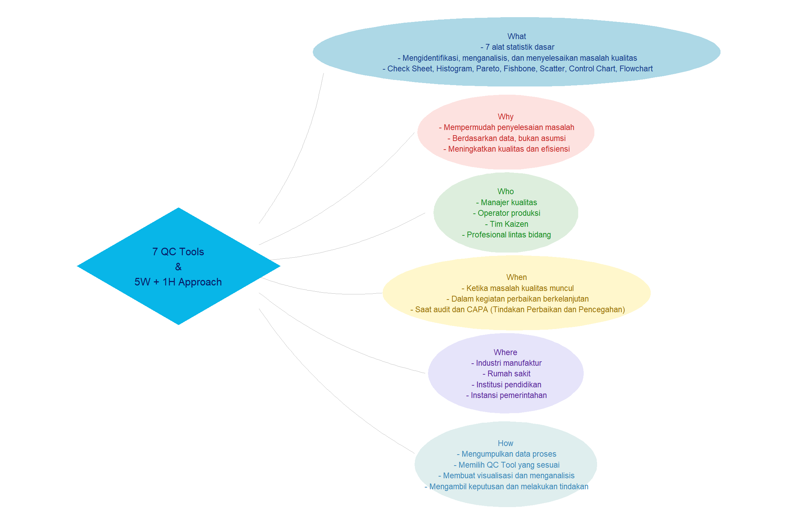

Seven Tools Analysis
1 Apa Itu 7 QC Tools?
NoteDefinisi
Definisi: 7 QC Tools (Seven Quality Control Tools), metode statistik sederhana yang digunakan secara sistematis mengidentifikasi, menganalisis, dan menyelesaikan masalah yang berkaitan dengan kualitas.
1.1 What
7 QC Tools → tujuh alat statistik dasar yang digunakan untuk membantu mengidentifikasi, menganalisis, dan menyelesaikan masalah kualitas secara sistematis.
Ketujuh alat tersebut adalah:
- Check Sheet – Lembar untuk mencatat dan mengumpulkan data.
- Histogram – Grafik untuk melihat persebaran data.
- Pareto Chart – Grafik untuk mengetahui masalah yang paling dominan.
- Fishbone Diagram – Diagram untuk mencari kemungkinan penyebab suatu masalah.
- Scatter Diagram – Grafik untuk melihat hubungan antara dua variabel.
- Control Chart – Grafik untuk memantau kestabilan suatu proses.
- Flowchart – Diagram untuk menggambarkan tahapan suatu proses.
1.2 Why
Mengapa kita perlu mempelajari dan menggunakan 7 QC Tools?
Berikut beberapa alasannya:
- Mudah digunakan: Alat-alat ini relatif mudah dipahami, bahkan oleh orang yang belum memiliki latar belakang statistik.
- Berdasarkan data: Membantu kita mengambil keputusan berdasarkan fakta, bukan sekadar dugaan.
- Membantu menemukan masalah: Mempermudah kita mengetahui masalah yang sedang terjadi.
- Meningkatkan efisiensi: Membantu menemukan bagian proses yang perlu diperbaiki.
- Meningkatkan kualitas: Membantu organisasi meningkatkan kualitas produk maupun pelayanan sehingga kepuasan pelanggan juga meningkat.
Contohnya, daripada langsung menyimpulkan bahwa keterlambatan pengiriman disebabkan oleh kurir, kita dapat mengumpulkan data terlebih dahulu untuk mengetahui penyebab sebenarnya.
1.3 Who
7 QC Tools tidak hanya digunakan oleh perusahaan besar atau orang yang bekerja di bidang pengendalian kualitas.
Beberapa pihak yang dapat menggunakannya antara lain:
- Quality Manager: Orang yang bertanggung jawab terhadap pengelolaan kualitas.
- Production Operator: Pekerja yang terlibat langsung dalam proses produksi.
- Supervisor: Orang yang mengawasi jalannya suatu proses.
- Kaizen Team: Tim yang berfokus pada perbaikan secara berkelanjutan.
- Auditor: Orang yang melakukan pemeriksaan atau evaluasi terhadap suatu proses.
- Profesional dari berbagai bidang: Misalnya bidang pendidikan, kesehatan, pelayanan publik, dan lainnya.
Artinya, siapa pun yang ingin memahami dan memperbaiki suatu masalah dapat memanfaatkan 7 QC Tools.
1.4 Where
Penerapan 7 QC Tools tidak terbatas pada perusahaan manufaktur atau pabrik saja.
Beberapa contoh penerapannya adalah:
- Industri Manufaktur: Memeriksa jumlah produk cacat selama proses produksi.
- Rumah Sakit: Menganalisis penyebab lamanya waktu pelayanan pasien.
- Perusahaan Jasa: Menganalisis penyebab keterlambatan pelayanan pelanggan.
- Institusi Pendidikan: Mengevaluasi proses pembelajaran dan kehadiran mahasiswa.
- Instansi Pemerintahan: Memantau kualitas pelayanan administrasi kepada masyarakat.
1.5 When
7 QC Tools dapat digunakan ketika kita menghadapi kondisi seperti:
- Ketika masalah kualitas terjadi secara berulang.
- Ketika organisasi ingin melakukan perbaikan secara berkelanjutan.
- Ketika ingin mengetahui akar penyebab suatu masalah (Root Cause Analysis).
- Ketika melakukan pemeriksaan atau audit kualitas.
- Ketika organisasi perlu menentukan tindakan perbaikan dan pencegahan atau CAPA (Corrective and Preventive Actions).
1.6 How
Secara umum, penggunaan 7 QC Tools dapat dilakukan melalui beberapa tahapan berikut:
- Mengumpulkan data: Catat informasi yang berkaitan dengan masalah yang sedang terjadi.
- Memilih alat yang sesuai: Tentukan QC Tool berdasarkan tujuan analisis.
- Menyajikan data: Buat tabel, grafik, atau diagram menggunakan data yang telah dikumpulkan.
- Menganalisis data: Perhatikan pola, frekuensi, hubungan, dan perubahan yang terjadi.
- Menemukan penyebab masalah: Identifikasi faktor-faktor yang kemungkinan menjadi penyebab masalah.
- Menentukan solusi: Buat rencana perbaikan berdasarkan hasil analisis.
- Melakukan evaluasi: Pantau apakah solusi yang diterapkan berhasil memperbaiki kondisi sebelumnya.
1.7 Penerapan 7 Alat QC
7 QC Tools dapat digunakan untuk membantu organisasi menemukan masalah, mengetahui penyebabnya, dan menentukan solusi berdasarkan data.
Sebagai contoh, kita gunakan kasus keterlambatan pengiriman barang.
Pertama, perusahaan menggunakan Check Sheet (Lembar Periksa) untuk mencatat data keterlambatan, seperti tanggal, waktu, dan penyebabnya. Selanjutnya, data dianalisis menggunakan Histogram untuk melihat pola keterlambatan dan Pareto Chart (Bagan Pareto) untuk mengetahui penyebab yang paling sering terjadi.
Setelah itu, Fishbone Diagram (Diagram Tulang Ikan) digunakan untuk mencari kemungkinan penyebab masalah berdasarkan faktor Manusia, Mesin, Metode, Material, dan Lingkungan. Scatter Diagram (Diagram Sebar) membantu melihat hubungan antara faktor tertentu dengan keterlambatan, sedangkan Control Chart (Bagan Kontrol) digunakan untuk memantau kestabilan proses pengiriman.
Terakhir, Flowchart (Bagan Alur) digunakan untuk menggambarkan tahapan proses pengiriman dan membantu menemukan bagian yang berpotensi menimbulkan masalah.
2 Alur Penerapan 7 QC Tools
Berikut gambaran tahapan penerapan 7 QC Tools dalam menangani masalah keterlambatan pengiriman barang.
Dengan menggunakan 7 QC Tools, perusahaan dapat menentukan tindakan perbaikan berdasarkan hasil analisis data. Contohnya adalah memberikan pelatihan kepada kurir, melakukan perawatan kendaraan secara berkala, dan meningkatkan sistem pelacakan pengiriman.
Intinya, 7 QC Tools membantu kita memahami masalah secara lebih terstruktur sehingga keputusan yang diambil lebih tepat dan risiko operasional dapat dikurangi.